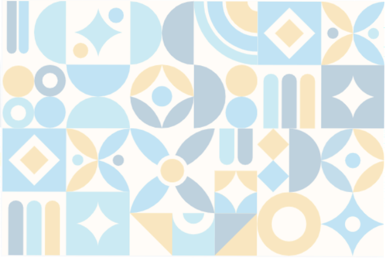

where i'm from
Stories about home, migration, family memory, and the places that continue to shape identity.

SMALL VOICES. BIG IMPACT.
Themes give each cycle of Mosaic Voices a shared starting point while still leaving room for personal interpretation.
Rotating prompts keep the mosaic growing in new directions. Some themes invite memory, some invite imagination, and some focus on place, language, and connection.
Stories about home, migration, family memory, and the places that continue to shape identity.
Objects, language, habits, music, and values that participants keep with them across transitions.
Hopes, ambitions, and future visions that allow the mosaic to look forward as well as backward.